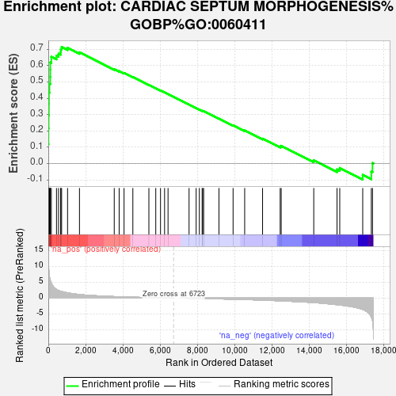
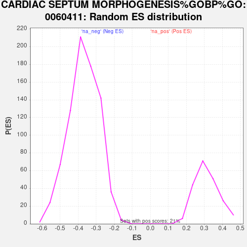

| Dataset | gene_ranks |
| Phenotype | NoPhenotypeAvailable |
| Upregulated in class | na_pos |
| GeneSet | CARDIAC SEPTUM MORPHOGENESIS%GOBP%GO:0060411 |
| Enrichment Score (ES) | 0.71440375 |
| Normalized Enrichment Score (NES) | 2.2960317 |
| Nominal p-value | 0.0 |
| FDR q-value | 1.8728741E-4 |
| FWER p-Value | 0.001 |

| SYMBOL | RANK IN GENE LIST | RANK METRIC SCORE | RUNNING ES | CORE ENRICHMENT | |
|---|---|---|---|---|---|
| 1 | SMAD6 | 0 | 14.930 | 0.1180 | Yes |
| 2 | NOG | 9 | 12.570 | 0.2168 | Yes |
| 3 | FGFR2 | 19 | 10.081 | 0.2959 | Yes |
| 4 | HAND1 | 29 | 8.979 | 0.3664 | Yes |
| 5 | SMAD7 | 34 | 8.656 | 0.4345 | Yes |
| 6 | HEY1 | 62 | 6.987 | 0.4882 | Yes |
| 7 | BMP7 | 102 | 5.718 | 0.5311 | Yes |
| 8 | NRP1 | 105 | 5.637 | 0.5755 | Yes |
| 9 | ENG | 107 | 5.632 | 0.6200 | Yes |
| 10 | BMPR1A | 163 | 4.790 | 0.6547 | Yes |
| 11 | LRP2 | 440 | 2.709 | 0.6602 | Yes |
| 12 | HES1 | 549 | 2.405 | 0.6730 | Yes |
| 13 | BMPR2 | 663 | 2.168 | 0.6837 | Yes |
| 14 | HEY2 | 669 | 2.160 | 0.7004 | Yes |
| 15 | TGFBR1 | 715 | 2.095 | 0.7144 | Yes |
| 16 | SEMA3C | 1034 | 1.674 | 0.7094 | No |
| 17 | SOX4 | 1674 | 1.141 | 0.6817 | No |
| 18 | GATA4 | 3541 | 0.484 | 0.5784 | No |
| 19 | SLIT3 | 3805 | 0.447 | 0.5668 | No |
| 20 | ZFPM2 | 4068 | 0.385 | 0.5548 | No |
| 21 | TBX2 | 4541 | 0.293 | 0.5300 | No |
| 22 | ACVR1 | 5402 | 0.161 | 0.4819 | No |
| 23 | NOTCH2 | 5772 | 0.111 | 0.4616 | No |
| 24 | PROX1 | 6027 | 0.078 | 0.4477 | No |
| 25 | TBX20 | 6245 | 0.052 | 0.4356 | No |
| 26 | SMAD4 | 6431 | 0.030 | 0.4252 | No |
| 27 | HEYL | 7560 | -0.039 | 0.3608 | No |
| 28 | CITED2 | 7941 | -0.083 | 0.3396 | No |
| 29 | SOX11 | 8112 | -0.103 | 0.3307 | No |
| 30 | GATA6 | 8262 | -0.123 | 0.3231 | No |
| 31 | TGFB2 | 8292 | -0.127 | 0.3224 | No |
| 32 | SLIT2 | 8343 | -0.133 | 0.3206 | No |
| 33 | ISL1 | 9165 | -0.237 | 0.2754 | No |
| 34 | JAG1 | 9924 | -0.348 | 0.2346 | No |
| 35 | TBX1 | 10547 | -0.456 | 0.2025 | No |
| 36 | BMP4 | 11508 | -0.624 | 0.1523 | No |
| 37 | NOTCH1 | 12454 | -0.850 | 0.1048 | No |
| 38 | ROBO1 | 12508 | -0.865 | 0.1086 | No |
| 39 | ZFPM1 | 14257 | -1.402 | 0.0193 | No |
| 40 | NRP2 | 15508 | -2.078 | -0.0361 | No |
| 41 | FGF8 | 15653 | -2.168 | -0.0272 | No |
| 42 | TGFBR3 | 16887 | -3.558 | -0.0699 | No |
| 43 | PARVA | 17349 | -5.921 | -0.0496 | No |
| 44 | ROBO2 | 17411 | -7.081 | 0.0029 | No |
